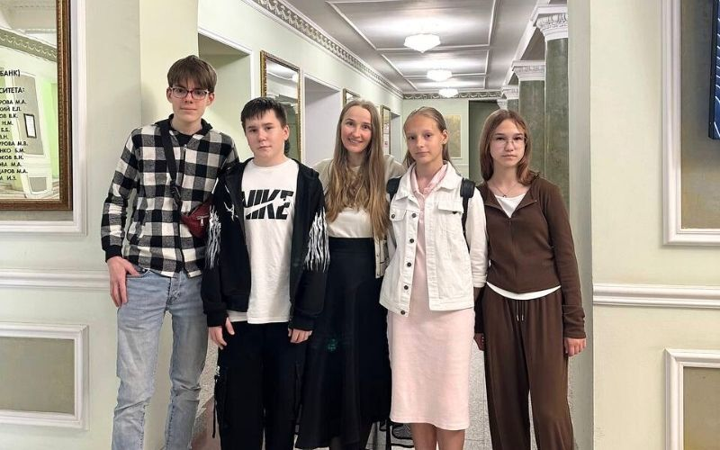
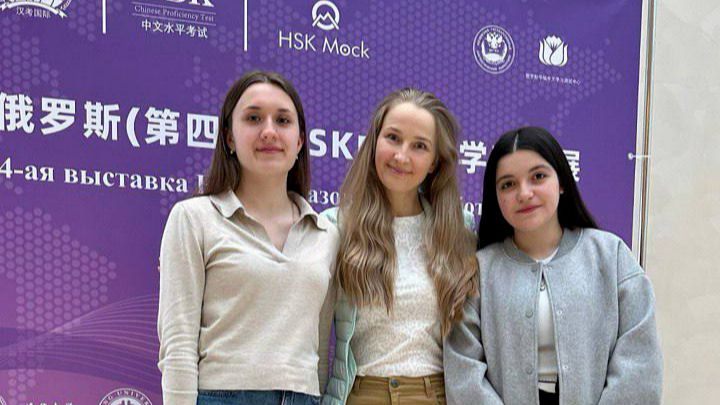
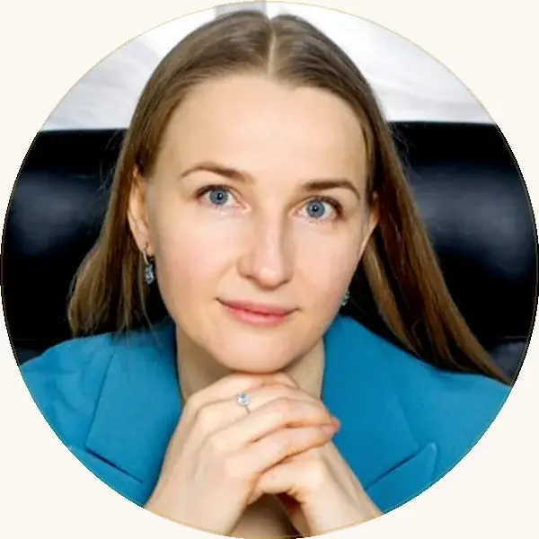

Китайский язык для детей — онлайн-обучение с нуля
Китайский онлайн для детей: игровая методика, собственная платформа-тренажёр и контроль каждого урока методистом. От первых слов до свободного диалога — с подготовкой к HSK, YCT и поступлению в вузы Китая.

Не «ещё один кружок», а вложение в будущее
Китайский для детей — это не только язык. Это мышление, дисциплина и реальные перспективы — от HSK до поступления в вузы Китая.
{{ x.t }}
{{ x.d }}
Своя программа для каждого возраста
Всё на одной странице — не нужно искать «свой» курс по разным сайтам. Выберите возраст ребёнка и посмотрите, как устроено обучение.
{{ stageGoal }}
{{ stageFormat }}
Конкретный результат по срокам
{{ t.what }}
{{ t.level }}Формат: {{ recFormatName }}. {{ recGoal }}
Подберём программу под ваш ритм
Три формата обучения. Выберите тот, который соответствует вашим целям и графику. Первое занятие — бесплатный пробный урок; доступны налоговый вычет 13% и оплата от юридического лица.
{{ f.name }}
≈ {{ calcAfterTax }} ₽
Реальные истории, а не общие слова
{{ c.text }}
{{ r.text }}
Учимся онлайн — поддерживаем офлайн
Уроки идут онлайн, но на сдачу HSK мы приезжаем поддержать каждого ученика лично. А летом — собираемся в языковом лагере в Китае.


Наша команда
Преподаватели с педагогическим образованием, методисты с многолетним опытом, операционная команда. Каждый ученик получает поддержку всей структуры.

Юлия Горяина
Преподаватель МГУ, китаист с 20-летним стажем. Создала Kitai School в 2005 году. Лично контролирует стандарты качества.
Татьяна Иоффе
Преподаватель ОмГУ, китаист с 30-летним стажем. Автор курса ОДиН М — единственной комплексной методики преподавания китайского в России.
Женни Рэй
Технологии и качество процессов. Отвечает за то, чтобы платформа, расписания, оплаты и связь работали безупречно.
Юлия Горяина
Китаист с 20-летним стажем, преподаватель МГУ. В 2005 году создала Kitai School и с тех пор лично отбирает лучшие методики и инструменты для самого эффективного обучения.
Контролирует стандарты качества каждого урока — от методики до живого общения с ребёнком. Под её руководством школа за 20 лет вырастила собственную платформу-тренажёр и команду из 30+ преподавателей.
Лицензия Департамента образования
Прозрачный договор с физическим или юридическим лицом. По лицензии возможен налоговый вычет 13%.
Открыть PDF лицензии →Вопросы и ответы
Ответы на ваши вопросы
Самое важное о формате, стоимости, гарантиях и условиях обучения.
Не нашли свой вопрос?
Напишите нашему менеджеру в Telegram — ответим в течение 15 минут в рабочее время.
Написать в Telegram →С какого возраста можно начинать?
С 6 лет. Для младших — короткие игровые уроки, для подростков — система и подготовка к экзаменам. Берём детей с нуля, опыт не нужен.
Это безопасно — учиться онлайн?
Уроки проходят в Zoom, всё видно родителю. Доступ к учебной платформе и прогрессу ребёнка — у вас в личном кабинете в любое время.
Преподаватель русскоязычный или носитель?
Базовые уроки ведёт русскоязычный преподаватель с педагогическим образованием. Разговорный клуб — с носителем языка, чтобы снять языковой барьер.
Сколько стоит и есть ли рассрочка?
Индивидуально — от 2 100 ₽ за урок, мини-группа 2–4 человека — 2 200 ₽ за урок с человека (пакет 8 уроков — 17 600 ₽/мес). Есть гибридный формат — от 12 000 ₽ за 3 месяца. Первое занятие бесплатное; доступны налоговый вычет 13% и оплата от юридического лица.
Что если ребёнок пропустил урок?
Занятие можно перенести, предупредив заранее. Учебные материалы и записи остаются на платформе — ребёнок ничего не теряет.
Как проходит обучение и с чего начать?
Изучение китайского начинается с оценки уровня знаний: определяем стартовый уровень владения языком и подбираем индивидуальные занятия, которые подойдут именно вашему ребёнку. Обучение проходит в игровой форме — простые фразы, новые слова и фразы ребёнок осваивает уже на первых уроках. Чтобы начать, оставьте заявку — и получите бесплатный пробный урок.
Кто преподаёт и как готовите к экзаменам?
Подготовка к экзаменам (YCT, HSK, HSKK) — отдельное направление. Носитель китайского помогает правильно произносить тоны и новые слова, чтобы изучать китайский было легко и в удовольствие. Сложные темы могут быть поданы доступно — по мере роста уровня владения добавляем тексты посложнее.
Какие документы и согласия нужны?
Все сведения об образовательной организации и лицензия Департамента образования г. Москвы опубликованы на сайте. Оставляя заявку, вы даёте согласие на обработку персональных данных. Изучайте языки с официальной лицензированной школой — это надёжно и прозрачно.
Зачем ребёнку китайский язык и как это влияет на развитие?
Китайский язык открывает новые знания и возможности для развития: тренирует память, внимание и речь. Иероглифы, звуки и тоны делают изучение увлекательным, поэтому учиться по-настоящему интересно, а узнаёт ребёнок при этом больше — о культуре народов мира и о жизни в Китае. Поэтому важно начать вовремя: интерес к языку часто перерастает в успехи в школе, а другие школьные предметы и дела идут легче — это поможет в учёбе и не заставит долго ждать результата.
Как проходит занятие и почему детям нравится учиться?
Каждое занятие — это живое общение, игры, песни и простые диалоги. Мы строим процесс обучения в игровой форме: ребёнок осваивает базовый набор слов, новые иероглифы и правила, выполняет задания и мини-игры, поёт песни и слушает звуки языка. Дети изучают язык с увлечением и удовольствием — сначала интерес, потом первые знания; им нравится говорить и заниматься, поэтому многие сами просят: «хочу ещё урок». Благодаря такому подходу мы помогаем сделать учёбу лёгкой, а мотивацию поддерживает живой интерес.
Кто преподаёт — учителя, репетиторы или носители языка?
Занятия ведут опытные учителя и репетиторы с педагогическим образованием; в преподавателе мы ценим не только знание языка, но и умение объяснять и заинтересовать. Китайский объясняем понятно, опираясь на русский язык как основу. Разговорные темы можно вести с носителем китайского — живое погружение помогает правильно говорить, понимать речь и уверенно общаться. Наши педагоги работают для школьников и подростков, у них большой опыт работы, а ребёнок не боится задавать вопросы. Как говорит наставник Анна: «я даю каждому ученику внимание и поддержку».
Какие материалы и ресурсы получает ученик?
Все учебные материалы — на собственной платформе: видео, тексты, аудио, песни, задания и записи уроков. С помощью тренажёра ребёнок закрепляет языковые навыки и может читать и повторять в любое удобное время; после занятия открыты дополнительные материалы и расписание. Платформа помогает закреплять знания — и учёба становится привычной частью дня. Мы регулярно проводим открытые уроки, чтобы родители видели процесс.
Для кого подходят курсы — детям, подросткам или взрослым?
Курсы рассчитаны на любой возраст: дошкольники, школьники с 1 класса, подростки, студенты и даже взрослые — есть направления и для взрослых. Для самых маленьких — знакомство со звуками, игры и лёгкий базовый уровень; для подростков — система и подготовка к экзамену. Мы подбираем индивидуальные программы именно под ребёнка, с учётом возраста, целей и уровня знаний, поэтому начать может ученик любого уровня. Есть несколько форматов — индивидуально, в паре и в мини-группе; вы знаете своего ребёнка, а мы поможем найти формат. Подходит ли китайский вашему ребёнку — покажем на пробном уроке.
Какие экзамены и сертификаты можно получить?
Готовим к международным экзаменам YCT и HSK; ученики получают официальные сертификаты, которые ценят вузы и работодатели по всему миру. Китайский — иностранный язык, который всё чаще выбирают как второй; он, как и английский, открывает большие возможности и даёт возможность учиться и работать с международным охватом. Это один из самых востребованных языков мира. Хотите узнать условия — оставьте заявку, и мы поможем найти лучший вариант.
Как записаться и что входит в обучение?
Чтобы записаться, напишите нам или оставьте заявку — первый пробный урок дарим в подарок. Наш подход прост и понятен: после открытия доступа к платформе ребёнок сразу начинает заниматься, а урок идёт в комфортном темпе. Записи занятий — часть курса и остаются у вас; программу осваивают и младшие школьники, и немало студентов. Сведения об образовательной организации и лицензия открыты на сайте, а ваши права как родителя мы соблюдаем.
Онлайн школа китайского языка для детей в Москве и по всей России: китайский язык для детей с нуля, индивидуально, в паре и в мини-группах, уроки китайского для начинающих, подготовка к YCT, HSK, HSKK и поступление в вузы Китая. Лицензия Департамента образования г. Москвы.
Запишите ребёнка на бесплатный урок
За 40 минут познакомим ребёнка с языком, определим уровень и подберём программу. Без обязательств.
Свяжемся с вами в течение рабочего дня и подберём удобное время пробного урока.